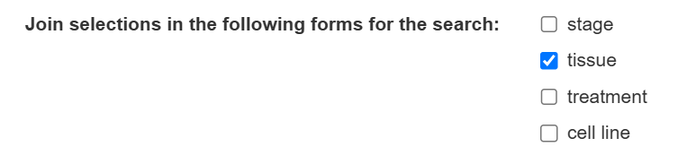
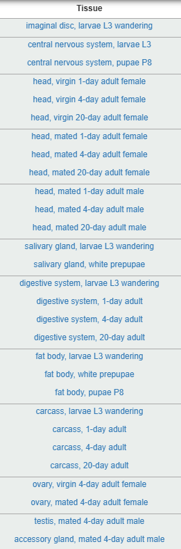
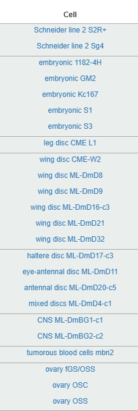
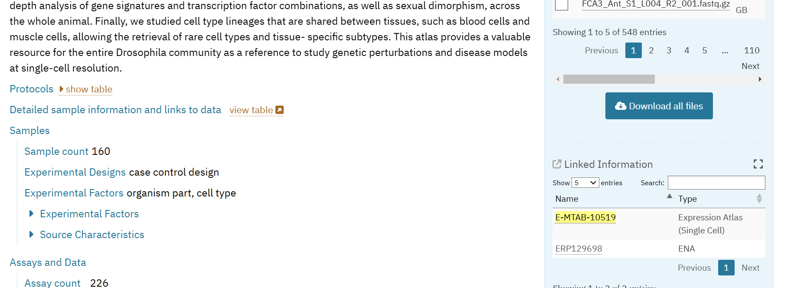
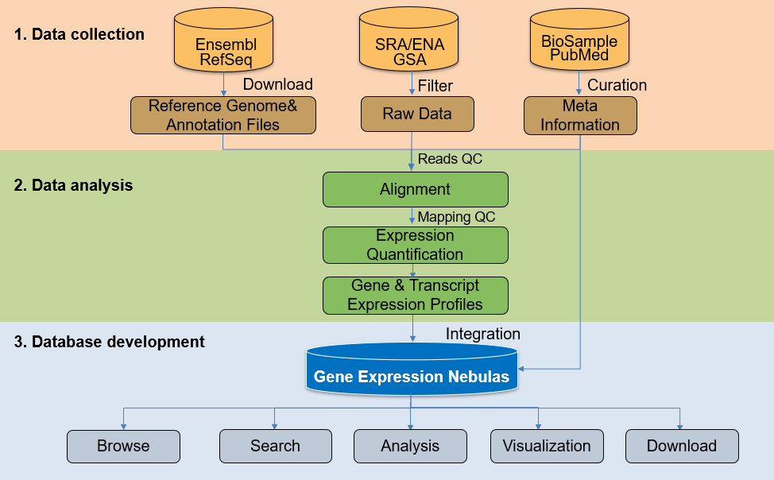
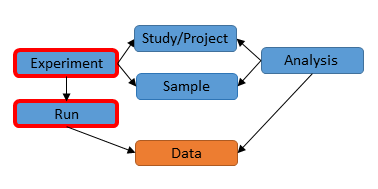
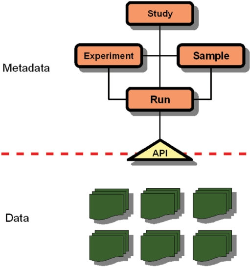

# Tidyverse libraries
library(knitr)
library(ggplot2)
library(dplyr)
library(stringr) # For regex operations
library(purrr) # vectorial operations
library(readr) # read and write tsv and csv files
# For website exploration
library(rvest) # For web scraping and HTML parsing
library(jsonlite)
library(httr2) # tailored for HTTP/HTTPS requests
# both packages are better tailored to FTP protocols
library(curl)
library(RCurl)
# For SQL parsing and integration with R
library(DBI) # open connection with DBMS
library(dbplyr) # seamless use of dplyr operations with SQL power
library(RSQLite) # lightweight DBMS
# Set global options
opts_chunk$set(
echo = TRUE, # Show R code in the output
eval = FALSE, # By default, do not execute R code
warning = FALSE, # Suppress warnings in the output
message = FALSE, # Suppress messages in the output
fig.width = 7, # Default figure width
fig.height = 5, # Default figure height
fig.align = "center" # Centre-align figures
)
# Set ggplot2 minimal theme for consistency
theme_set(theme_minimal())Protocol to downnload and retrieve metadata to build reference datasets
Litterature and web-scraping
- RNASeq, tissue-resolved datasets:
- the FlyBase:Drosophila_Online_Resources
- The Wiki fly page also refers to a a list of tools, Web APIs and curated pipelines to analyse Drosophila samples.
- Most popular and relevant studies are
modENCODEtissue and cell lines experiences andFlyAtlas21.
- scRNASeq datasets:
- Complete list of Datasets, from FlyAtlas compendium
All these datasets, with some metadata characterising them, are reported in Excel table data/databases_metadata.xlsx, composed of three sheets:
Databases references, enumerating the most relevant datasets and RNASeq resources.DRscDB Databases Single Cell, listing all scRNASeq datasets having a higher granularity than tissue level (for instance, characterising the cell subtypes composing the digestive tract).
(Optionnal) Retrieve programmatically DRscDB single cell databases
- Toggle the
DRscDBDatasets tab. - Retrieve the metadata dataset using the R web-scraping tool
rvest, and select only the most relevant columns:
url_DRscDB <- "https://www.flyrnai.org/tools/single_cell/web/summary"
irrelevant_columns_DRscDB <- c("pubmed date", "dataset ids", "subset names",
"species", "species id",
"reads cell", "genes cell", "total gene",
"batch correction", "data in supp table",
"web link available", "linkout URL")
metadata_DRscDB <- read_html(url_DRscDB) |> # read a HTML file
html_table() |> # from the HTML file, select only Tables (on that website, only one found)
purrr::pluck(1) |>
filter(species %in% "Drosophila") |> # Filter on Drosophila species
select(-all_of(irrelevant_columns_DRscDB))Retrieve phenotype annotation for each dataset
Major issues for retrieving Phenotypes
- No homogeneous database storage (SQL, Excel, SRA, tsv file, …), within and in-between studies
- While the FlyBase database is comprehensive, does not store properly annotation data for each tissue, at least for RNASeq samples2.
- No official and up-to-date BioConductor nor CRAN package to fetch and explore Drosophila databases
Consequence: specific protocol for retrieving such phenotypical annotation for each dataset (I enumerate for the top three popular ones).
The ModENCODE pheno data
- The easiest way I could find: retrieve metadata from JBrowse FlyBase Wiki website
ModENCODE_databases <- read_html("https://wiki.flybase.org/wiki/FlyBase:ModENCODE_data_at_FlyBase#RNA-Seq_JBrowse_Track_Listing") |>
html_table() |> # `trim = FALSE` to ensure missing cells are filled correctly
purrr::pluck(1) |>
filter(`Track section` %in% c("Expression>RNA-Seq >modENCODE Transcriptomes >Tissues"))
ModENCODE_databases_formatted <- ModENCODE_databases |>
dplyr::filter(stringr::str_detect(`Track section`, "Tissues$")) |>
select(-`Track section`, - "JBrowse Track Description") |>
rename(tissue = "Track name", FlybaseID="FlyBase Dataset(s)") |>
mutate(FlybaseID = lapply(stringr::str_split(FlybaseID, # split by mE_mRNA, without consuming the separator
pattern = "(?=mE_mRNA)"), str_subset, "[^ ]")) |> # remove empty chains
tidyr::unchop(FlybaseID) # from compact list of samples per tissue type to tidy format
readr::write_csv(ModENCODE_databases_formatted,
"./data/RNASeq/ModENCODE_pheno_data.csv")- Alternative methods:
- When pasting a HTML table to an Excel Workbook, use Paste with a refreshable web query option
- The FlyBase RNASeq Search profile, clicking on the
tissueand optionallycell lineitems.



- To finalise the annotation, we’re going to use the Rest API GET HitList, programmatic access enabled by the FlyBase website:
# Which individual experiences we want metadata from?
flybase_ids <- c("FBlc0000215", "FBlc0000216", "FBlc0000217")
# Create a URL with IDs delimited by commas
base_url <- "https://api.flybase.org/api/v1.0/hitlist/fetch"
modENCODE_request <- request(base_url) |>
# parameter construction defined here: https://flybase.github.io/api/swagger-ui/#/HitList/getFlyBaseHitList
req_url_path_append(flybase_ids |>
paste(collapse = ",")) |>
req_perform()
# Check the response status, 200 corresponding to a success
if (resp_status(modENCODE_request) == 200 & resp_has_body(modENCODE_request)) {
# Parse the JSON content into an R object
ModENCODE_metadata <- modENCODE_request |>
resp_body_string() |>
fromJSON() |>
purrr::pluck("resultset") |>
purrr::pluck("result")
} else {
# convert a HTTP error to a R error
resp_check_status(modENCODE_request)
}The FlyAtlas2 pheno data
Excel workbook and aggregated dataset
The Excel Workbook mentioned in the Docs tab section of the official FlyAtlas2 initiative only stores aggregated and averaged information at the tissue level, rendering it useless for proper downstream analyses3.
In conclusion, this method and this dataset is irrelevant for most downstream analyses4
- In the FPKM/RPKM file stored in the web encyclopaedia
FlyBase, the column headers identifying uniquely each sample describe the developmental stage, the sex and the original tissue. However, it’s not really practical to parse, nor follows an unique identifier composition. Example:RNA-Seq_Profile_FlyAtlas2_Adult_Female_Brain_(FBlc0003619).- However, we can use the same REST API trick mentioned in (API-FlyBase-modENCODE-metadata?) to get some additional information (column
title).
- However, we can use the same REST API trick mentioned in (API-FlyBase-modENCODE-metadata?) to get some additional information (column
The most challenging method involves re-running the SQL file provided with the project.
- The name of the SQL file can be retrieved on the
FlyAtlas2website, or, in a somehow twisted way with the following R code5.
- The name of the SQL file can be retrieved on the
flyatlas_url <- "https://flyatlas.gla.ac.uk/FlyAtlas2/index.html?page=help"
webpage_text <- read_html(flyatlas_url) |>
html_text()
flyatlas_files <- stringr::str_extract_all(webpage_text,
"motif.mvls.gla.ac.uk/downloads/[^\\s]+", simplify = TRUE) |> as.vector()- From the previous manipulation, two files are available: motif.mvls.gla.ac.uk/downloads/FlyAtlas2_2024.01.08.sql, motif.mvls.gla.ac.uk/downloads/FlyAtlas2_gene_data.xlsx, but only the SQL file is comprehensive, storing gene expressions at the individual level (and not at the aggregated tissue level). i. The SQL relational database is described in details in Supplementary FlyAtlas 2 documents, Table S2, Pages 3-4. Of interest, the
Tissue,GeneFPKMandGeneRPMdatasets6. ii. Parse the SQL file’s instructions, keeping SQL lines for buildingTissue,GeneFPKMandGeneRPMdatasets. Usually, building a SQL dataset involves three stages: ensuring the non prior existence of the dataset (if it’s the case, enforce its deletion), define the dataset (name and type of features/columns), and finally, build the dataset itself (indeed, dataset content is hard-coded within the SQL file):
sql_instructions <- readr::read_lines('data/FlyAtlas2_2024.01.08.sql',
skip_empty_rows = TRUE) |>
# Keep only lines that are NOT empty nor commented (defined by "--")
# stringr::str_subset("^\\s*(--)|/\\*", negate = TRUE) |>
stringr::str_subset("^\\s*(--)|/\\*|(UN)?LOCK", negate = TRUE) |>
paste(collapse = "\r\n") |>
str_extract_all(pattern = regex("[^;]+;", multiline = TRUE,dotall = TRUE),
simplify = TRUE) |>
as.vector()
tissue_index <- grep("CREATE TABLE `Tissue`", sql_instructions, fixed = TRUE)
tissue_instructions <- sql_instructions[(tissue_index-1):(tissue_index + 1)]
readr::write_lines(tissue_instructions,
"data/old_tissue_parsing.sql")- Use modern SQL DBMS. Report to section Section 1.2.3 for further details. Major issue with the current Fly Atlas 2 database is their outdated use of the
myISAMDBMS standards, for which no official converter exists.
- (Optional) Verify your updated SQL instructions can be parsed and executed using your local DBMS manager like mySQL, or even simpler, going on SQL online resources. It turned out that we had to remove an uniqueness constraint on
Tissue.Abbreviationfeature to run the SQL code. - Execute the modern SQL file, store transiently the output to a SQLite database, collect and export the results as a standard csv file.
# create SQLite database connection
con <- dbConnect(RSQLite::SQLite(), "data/FlyAtlas2_tissue.sqlite")
sql_statements <- readr::read_lines("data/new_tissue.sql",
skip_empty_rows = TRUE) |>
stringr::str_subset("^\\s*(--)|/\\*|(UN)?LOCK", negate = TRUE) |>
paste(collapse = "\r\n") |>
str_extract_all(pattern = regex("[^;]+;", multiline = TRUE,dotall = TRUE),
simplify = TRUE) |>
as.vector()
# Tip: since dbExecute can only perform one query after the other, we use a for-loop to perform sequential SQL queries
for (statement in sql_statements) {
dbExecute(con, statement)
}
# testthat::expect_contains(dbListTables(con), "Tissue")
# DBI::dbRemoveTable(con, "Tissue")
# Export the tissue dataset to a standard CSV format
tissue_fly_atlas <- tbl(con, "Tissue") |>
collect()
readr::write_csv(tissue_fly_atlas,
"data/pheno_data_flyatlas2.csv")
# Close the connection once done
dbDisconnect(con)(Optionnal) Convert old SQL version 5 to modern SQL version 9
While functionalities going along the DBI R package would theoretically enable us to execute SQL instructions directly from R, it turns out that the SQL instructions are tailored to MyISAM DBMS software, outdated from 2009, and can not be processed directly by the DBI wrapper. Besides, DBI works best with SQLite DBMS, and the FlyBase SQL file has not been written to that end. To conclude, we have to convert the SQL FlyBase file to modern SQL standards (current version: SQL Server 2022) while ensuring compatibility with SQLite.
No dedicated tools, up to my knowledge, have been developed in R to that end. So definitely, the best method, while being intrinsically stochastic, would consist of pairing a LLM using API REST integration with prompt engineering. I propose two code snippets below with a personalised engineered prompt, using chattr, see Listing 1 and tidychatmodels, see Listing 2, respectively7.
# remotes::install_github("mlverse/chattr")
library(chattr)
# parameter configuration and saving
chattr_use("copilot")
chattr_defaults(max_data_files = 10,
include_doc_contents = TRUE,
max_data_frames = 10,
yaml_file = "vignettes/chattr.yml")
new_sql <- chattr(prompt = "Please convert the SQL file <old-sql-location>, written with SQL version 5, to SQL Server 2022 syntax, while making it compliant with the SQLite DBMS constraints.",
prompt_build = "Specifically, focus on the following: Change data types to match SQLite standards (e.g., TINYINT to INTEGER, ENUM to TEXT). Replace AUTO_INCREMENT with AUTOINCREMENT. Remove any unsupported SQL syntax in SQLite. Write the resulting modernised SQL file to `data/new_tissue_global.sql`")# devtools::install_github("AlbertRapp/tidychatmodels")
library(tidychatmodels)
chat_openai <- create_chat('openai', Sys.getenv('OAI_DEV_KEY'))|>
add_model('gpt-3.5-turbo') |>
# add_params(temperature = 0.5, max_tokens = 100) |>
# define the general AI agent system
add_message(
role = 'system',
message = 'You are a chatbot that only returns SQL code, whose syntax is
compatible with SQL Server 2022 and SQLite DBMS.'
) |>
# create your customised prompt
add_message(
role = 'user',
message = 'Convert old sql file <old-sql-path> to recent SQL code,
write the output to <new-sql-path>. Specifically: Update data types to align
with SQLite standards, such as replacing TINYINT with INTEGER,
ENUM with TEXT, and other incompatible types. Change AUTO_INCREMENT to
AUTOINCREMENT for primary keys. Remove syntax elements unsupported in SQLite,
like full-text indexes, foreign key constraints outside PRAGMA, or stored procedures.
Where conflicts between SQL Server and SQLite arise, prioritize SQLite compliance.
Output the transformed SQL file as a set of discrete statements, one per line,
removing empty or commented lines for clarity. Do not add any empty lines nor comments. Do not add uniqueness constraints. Convert the entire SQL file, without using further rows argument.'
)
chat_user_result <- chat_openai |>
perform_chat()|>
extract_chat(silent = TRUE)And finally, an alternative SQL method, which mixes a bunch of regex expressions and tidyverse manipulations, while guaranteeing a determined output:
tissue_colnames <- grep("CREATE TABLE `Tissue`", sql_instructions,
fixed = TRUE, value = TRUE) |>
stringr::str_extract_all(pattern = "(?<=\\`)[[:alnum:]]+(?=\\`)",
simplify = TRUE) |>
as.vector() |>
unique() |>
setdiff("Tissue")
tissue_inputs <- grep("INSERT INTO `Tissue`", sql_instructions,
fixed = TRUE, value = TRUE) |>
stringr::str_extract_all("(?<=\\()([^)]+)(?=\\),*)",
simplify = TRUE) |>
as.vector() |>
stringr::str_replace_all("'", "") |>
purrr::map(\(x) stringr::str_split(x, ",", simplify = TRUE) |>
tibble::as_tibble()) |>
purrr::list_rbind() |>
setNames(nm = tissue_colnames)
readr::write_csv(tissue_inputs,
file = "data/pheno_data_flyatlas2.csv",
escape = "none", quote = "none")The single cell Fly Cell Atlas pheno data
One possibility to retrieve phenotype data would consist of using the BioConductor ArrayExpress package. Unfortunately, it does not seem updated anymore, and was indeed unable to download and parse the two FCA experiences (actually, even the examples from the package documentation can’t be executed anymore)8. Typical pipeline is illustrated below:
#if (!requireNamespace("BiocManager", quietly = TRUE))
# install.packages("BiocManager")
# BiocManager::install("ArrayExpress")
library(ArrayExpress)
# download both processed and raw datasets
ae_files <- getAE("E-MTAB-10628", type = "full", path = "data/Fly_Cell_Atlas_10x/")
## Build a an ExpressionSet from the raw data
ae_data_raw <- ae2bioc(mageFiles = ae_files)
## Build a an ExpressionSet from the processed data
ae_data <- procset(ae_files, getcolproc(ae_files)[2])
# equivalent to run ArrayExpress function
ae_data <- ArrayExpress("E-MTAB-10628", path = "data/Fly_Cell_Atlas_10x/",
save = TRUE, dataCols = NULL)
# use methods from the Biobase::ExpressionSet object to retrieve respectively
pheno_data <- phenoData(ae_data) # phenotype data
experiment_data <- experimentData(ae_data) # MIAME experiment annotation (metadata)
gene_annotation <- fData(ae_data) # gene feature annotation
expression_matrix <- exprs(ae_data) # expression matrix data
# worth noted that the ExpressionSet object is well tailored for bulk micro-array
# and RNASeq, but not really for singlecell RNASeq experiencesAlternatively, you can download both 10X and Smartseq2 experiences and expression data at the count level (raw and after applying TPM normalisation) using the following Single cell Expression Atlas web query, then crossing out both datasets, and finally clicking on the Download 2 entries button feature.
You can perform it simultaneously for both datasets, or one dataset after the other, as illustrated in Listing 3 for the https protocol (only a subsetting of files is available through this protocol) and the ftp protocol, Listing 49:
# "https://www.ebi.ac.uk/gxa/sc/experiment/E-MTAB-10628/download/zip?fileType=experiment-metadata&accessKey="
# "https://www.ebi.ac.uk/gxa/sc/experiment/E-MTAB-10628/download?fileType=experiment-design&accessKey="
# https://www.ebi.ac.uk/gxa/sc/experiment/E-MTAB-10628/download/zip?fileType=normalised&accessKey=
# https://www.ebi.ac.uk/gxa/sc/experiment/E-MTAB-10628/download/zip?fileType=quantification-raw&accessKey=
base_url <- "https://www.ebi.ac.uk/gxa/sc/experiment/"
array_identifer <- "E-MTAB-10628" # the SmartSeq identifier
# array_identifer <- "E-MTAB-10519" # the 10X identifier
# we took the example of the metadata zip file, containing idf and sdrf files
# should be extended to normalised and raw expression files + experiment design
metadata_path <- file.path("./data/Fly_Cell_Atlas_10x",
paste0(array_identifer, "-experiment-metadata", ".zip"))
fca_request <- request(base_url) |>
req_url_path_append(array_identifer, "download", "zip") |>
req_url_query(fileType="experiment-metadata", accessKey="") |>
req_progress(type = "down") |>
req_perform(path = metadata_path)
if (resp_has_body(fca_request) & !resp_is_error(fca_request)) {
zip::unzip(metadata_path,
overwrite = TRUE, exdir = "./data/Fly_Cell_Atlas_10x")
file.remove(metadata_path)
}base_url <- "ftp.ebi.ac.uk/pub/databases/microarray/data/atlas/sc_experiments"
array_identifier <- "E-MTAB-10628"
ftp_url <- paste0(base_url, "/", array_identifier, "/")
# List all files in the FTP directory
ftp_filenames <- curl_fetch_memory(ftp_url) |>
purrr::pluck("content") |>
rawToChar() |>
# Split by rows (newline character)
str_split( pattern = "\r\n", simplify = TRUE) |>
str_subset("[^ ]") |> # remove empty lines |>
# matches one or more characters that are not whitespace, to the end of the string.
stringr::str_extract( pattern = "[^\\s]+$")
idf_index <- grep(pattern = "idf", ftp_URLs)
ftp_URLs <- paste0(ftp_url, ftp_filenames)
download.file(ftp_URLs[idf_index],
destfile = ftp_filenames[idf_index],
method = "auto")
ArrayExpress datasets
ArrayExpress datasets are traditionally organized into the following key file types, ordered by increasing level of detail:
Investigation Description Format (IDF) provides a high-level overview of the experiment.
- Title and Description: Summary of the experiment’s purpose.
- Design and Protocols: Experimental design and factors studied (e.g., treatments, time points).
- Contacts: Information about the authors or submitters.
Sample and Data Relationship Format (SDRF): the phenotype data, detailing the mapping between Sample Identifiers, Factor Values and Data File Names
Array Design Format (ADF) used to provide the design of microarray platforms used in the experiment. Equivalent to featureData, setting up the mapping between the genes sampled and their modern and standard equivalents.
Expression matrices, as:
- Raw Data Files (from FASTQ (for sequencing data) to CEL (for Affymetrix arrays))
- Processed Data Files (usually counts, after normalization or transformation)
Retrieve transcriptomic annotation
The ModENCODE expression matrix
The current RPKM database storing all bulk RNASeq experiences on the comprehensive FlyBase data collection can be retrieved here.
Alternatively, we can explore the FTP repository, sub-setting the files’ selection to those mentioning gene_rpkm explicitly in their name10
# FTP URL for the repository
ftp_url <- "ftp://ftp.flybase.net/releases/current/precomputed_files/genes/"
# List all files in the FTP directory
ftp_files <- curl_fetch_memory(ftp_url) |>
purrr::pluck("content") |>
rawToChar() |>
# Split by rows (newline character)
str_split( pattern = "\r\n", simplify = TRUE) |>
str_subset("[^ ]") # remove empty lines
# Split each row by columns (tab character) and convert to a data.frame
ftp_files <- as_tibble(do.call(rbind,
str_split(ftp_files, pattern = "[[:blank:]]{2,}")))
ftp_files <- ftp_files |>
tidyr::separate_wider_delim(cols = "V4",
delim = " ",
too_many = c("drop"), # silently remove file renaming
names = c("size", "month", "day", "hour", "filename"))
rnaseq_ftp_files <- stringr::str_subset(ftp_files$filename,
pattern = "gene_rpkm")In that case, only 2 store gene expression data, namely gene_rpkm_matrix_fb_2024_05.tsv.gz, gene_rpkm_report_fb_2024_05.tsv.gz:
- gene_rpkm_matrix_fb_2024_05.tsv.gz: Table description. Note that
ModENCODEdata is provided with RPKM pre-processed RNA-Seq expression values, whileFlyAtlas2data has been normalised to FPKM units. - gene_rpkm_report_fb_2024_05.tsv.gz: Table description
The FlyAtlas2 expression matrix
The Fly Cell Atlas expression matrix
Depending on the level of resolution, the new Biostudies website, aiming at replacing the ArrayExpress web server, provides two APIs:
To download files at the expression level (counts), both normalised and raw counts, we already detailed a programmatic process in Section 1.2.4. Note that in addition to the protocol detailed in previous section, you may alternatively use
FTP,curl,AsperaorGlobussoftware. However, these tools usually require to know in advance all file locations and paths to be downloaded. All these tools are further detailed in Biostudies documention.The ENA Portal API (see Listing 5 for programmatic access) can be used to retrieve raw files, at the sequence level (in other words, the bio-informatician job, with possibility to retrieve both FASTQ and BAM files, the latter corresponding to sequences already aligned against a reference genome).
- It requires to retrieve the corresponding ENA or Project accession number (usually, the
PRJ...is the main identifier, while theERP...is the second, optional identifier).E-MTAB-10628is paired withPRJEB45993project (ENA identifier:ERP130174) and, whileE-MTAB-10519is paired withPRJEB45570(ENA identifier:ERP129698). - More documentation details can be found here, and an interactive swagger UI is reported here.
- Without this mapping information, you can browse it on the
Biostudieswebsite (report to Figure 1 for a snapshot), or programmatically by either parsing theidffile or retrieving the json file associated with the Biostudies online accession (see Listing 6).

# interactive swagger ui https://www.ebi.ac.uk/ena/portal/api/swagger-ui/index.html#/Search%20%26%20Discovery/getResults
url_base <- "https://www.ebi.ac.uk/ena/portal/api"
# all available result types for a given study:
ena_avalaible_datasets <- request(url_base) |>
req_url_path_append("results") |>
req_url_query(format="tsv") |>
req_perform() |>
resp_body_string() |>
readr::read_tsv(show_col_types = FALSE)
# of interest for raw files, the `read_run` is certainly the most complete
# request for retrieving all potential fields for the read_run dataset
# interactive: https://www.ebi.ac.uk/ena/portal/api/swagger-ui/index.html#/Search%20%26%20Discovery/getReturnFields
read_run_fields <- request(url_base) |>
req_url_path_append("returnFields") |>
req_url_query(dataPortal="ena", result="read_run", format="tsv") |>
req_perform() |>
resp_body_string() |>
readr::read_tsv(show_col_types = FALSE)
# and finally, for a given project, the direct FTP links to fastq or BAM files
# interactive: https://www.ebi.ac.uk/ena/portal/api/swagger-ui/index.html#/Search%20%26%20Discovery/fileReport
PRJEB45993_BAM_FASTQ_URLs <- request(url_base) |>
req_url_path_append("filereport") |>
req_url_query(accession="PRJEB45993",
result="read_run",
fields=c("study_accession", "experiment_accession","run_accession",
"fastq_ftp", "fastq_md5",
"bam_ftp"," bam_md5"),
format="tsv",
download = TRUE,
.multi = "comma") |>
req_perform()
# for whatever reason, piping all these operations lead to time out.
read_run_fields <- read_run_fields |>
resp_body_string() |>
readr::read_tsv(show_col_types = FALSE)
# number of rows:
# https://www.ebi.ac.uk/ena/portal/api/filereportcount?result=read_run&accession=PRJEB45993&format=tsv
read_run_rows <- request(url_base) |>
req_url_path_append("filereportcount") |>
req_url_query(accession="PRJEB45993",
result="read_run",
format="json") |>
req_perform() |>
resp_body_json() |>
pluck("count") |>
as.integer()
testthat::expect_equal(nrow(read_run_fields),
read_run_rows)url_base <- "https://www.ebi.ac.uk/biostudies"
array_identifier <- "E-MTAB-10519"
ERP_symbol <- request(url_base) |>
req_url_path_append("files") |>
req_url_path_append(array_identifier) |>
req_url_path_append(paste0(array_identifier, ".json")) |>
req_perform() |>
resp_body_json(simplifyVector = TRUE) |>
pluck("section") |>
pluck("links") |>
pluck(1) |>
dplyr::pull("url") |>
stringr::str_subset("^ERP")Of note, without REST API programmatic access, the BioConductor SRAdb package provides programmatic access to metadata from the Sequence Read Archive (SRA) and ENA (European Nucleotide Archive) from R11.
However, it relies on a strong SQLite dependency, has not been maintained for more than two years, and requires prior installation of the SQL metadata database, implying strong storage and memory-resource. Besides, search of the database has been streamlined by the development of the ENA Browser API.
Other methods for non-programmers are reported in Download Files ENA Documentation, with popular tools like ENA Browser, ENA FTP Downloader GUI tool, Globus or Aspera. While practical for downloading thousands of files, with dedicated facilities to manage parallel downloading or error handling, they require custom and often admin rights’ installation, depending on third-party software. Besides, they’re not really practical for enforcing FAIR and reproducibility guidelines.
MD5 role
You may have noticed in Listing 5 that we have collected both original raw files and their MD5 peers. Indeed, the MD5 file stores a 32-character hexadecimal string generated that guarantees data integrity (check for file’s alterations or corruptions, partial downloading, …). Any mismatch in checksums indicates that the file has been corrupted. The easiest way to verify file integrity is certainly by looping over each pair of original file - MD5 file, using the digest package:
library(digest)
# Define the file path and expected MD5 checksum
file_path <- "path/to/your/file.txt" # Replace with your file's path
expected_md5 <- "d41d8cd98f00b204e9800998ecf8427e" # Replace with the provided checksum
# Compute the MD5 checksum of the file
calculated_md5 <- digest(file = file_path, algo = "md5", serialize = FALSE)
# testthat::expect_equal(calculated_md5, expected_md5)(Optionnal) FTP access on Biostudies (and not ENA)
We detailed in the following code snippet:
the Biostudies API to retrieve the most comprehensive metadata file for a given study, the latter listing also differences with the previous ArrayExpress web server.
A
RCurlsimplified code to list and download all files along with their properties (such as size or access rights). Yet, the Biostudies repository is usually much less comprehensive and organised as the ENA/SRA web server, while exhibiting the following odd path composition:ftp.sra.ebi.ac.uk/vol1/<file-type>:err|fastq|run/<accession-prefix>/<00-last-digit-of-full-accession>/<full-accession>/, described thoroughly in SRA FTP Structure documentation, and preventing downloading the whole study without access to metadata and file localisations.
# 1) not that relevant, too many fields to process, without clear structure
url_base <- "https://www.ebi.ac.uk/biostudies/api/v1/studies"
array_identifier <- "E-MTAB-10519"
ena_detailled_information <- request(url_base) |>
req_url_path_append(array_identifier) |>
req_perform() |>
resp_body_json()
# 2) easiest process for listing all files in a FTP repo using RCurl
base_url <- 'ftp.ebi.ac.uk/biostudies'
study_type <- stringr::str_extract(array_identifier, "^[[[:alpha:]]-]+")
study_suffix <- stringr::str_extract(array_identifier, "[[:digit:]]{3}$")
# remove the Files/ if you just wish to access general metadata
biostudies_ftp_url <- paste(base_url, "fire",
study_type, study_suffix,
array_identifier, "Files/",
sep = "/")
# ftp.use.epsv ensures that the request is not rejected by the FTP web server
# dirlistonly ensures that we only retrieve filenames from the FTP repository
ftp_biostudies <- RCurl::getURL(biostudies_ftp_url,
ftp.use.epsv = FALSE, dirlistonly = TRUE) |>
stringr::str_split(pattern = "\r\n", simplify = TRUE) |>
as.vector() |>
str_subset("[^[[:blank:]]*]") # remove empty chains, only composed of white spaces
# define the connection port
con <- getCurlHandle(ftp.use.epsv = FALSE)
# download all file listed in the FTP repository
contents <- sapply(filenames, getURL, curl = con)(Optionnal) SRA and ENA organisational structure
ENA hierarchical structure
The hierarchical structure in the SRA (Sequence Read Archive) or ENA (European Nucleotide Archive) follows the following order of granularity:
1.ERP (or SRP) represents a study or project, describing the overarching goal of the sequencing experiment and providing metadata about the research context.
ERS (or SRS) represents an individual biological sample within a study.
ERX (or SRX) represents an experiment, describing the methodology applied to a sample, such as library preparation, sequencing platform and sequencing strategy (e.g., RNA-seq, WGS).
The ERR (or SRR) represents a specific run, which is the unit of raw sequencing data generated from an experiment. Each ERR corresponds to a FASTQ file or set of FASTQ files containing sequencing reads.
Note that complex mappings relate these objects to each other:
- Multiple Experiments can be grouped together to form a Study.
- A single Sample can be used by more than one Experiment, so there is a many-to-many relationship between Samples and Experiments.
- One Experiment can store multiple Runs.
- Only the Run level has a one-to-one relationship or Paired-End, assuming the FASTQ format was used, relationship with the original files.
More documentation on the - Main facilities delivered by the ENA web server, including programmatic access: Petabyte-scale innovations at the European Nucleotide Archive, from (cochrane2009nar?). - Some infographics for detailing the interconnections between the most prominent gene repositories are reported in Fig. Figure 2.



Programmatic access to FlyBase
To retrieve datasets stored in FlyBase, such as sex, tissue, or lab information, in an automated and programmatic manner, you can use of these three approaches, ordered by increasing complexity but scalability:
Precomputed Metadata Files:
They are accessible using the FlyBase FTP: - Wiki Documentation of the Databases structure and Overview
Only for Linux users: wget access
- Download the RPKM file:
wget http://ftp.flybase.org/releases/FB2024_05/precomputed_files/genes/gene_rpkm_report_fb_<version>.tsv.gz where <version> is a placeholder referring to a FlyBase release. Alternatively, use:
wget http://ftp.flybase.org/releases/FB2024_05/precomputed_files/genes/gene_rpkm_*.tsv.gz where * is a regex expression standing for any symbol (in that case, it should download two datasets).
- Extract and view the file:
gunzip gene_rpkm_report_fb_2024_05.tsv.gz- Analyze in R:
RPKM_file <- readr::read_tsv("gene_rpkm_report_fb_2024_05.tsv",
sep = "\t", header = TRUE)
head(RPKM_file)Alternatively, we propose the following portable R script to replicate the wget and gunzip functionalities.
# Define the URL and output file paths
url <- "http://ftp.flybase.org/releases/FB2024_05/precomputed_files/genes/gene_rpkm_report_fb_2024_05.tsv.gz"
output_file <- "data/RNASeq/gene_rpkm_report_fb_2024_05.tsv.gz"
output_unzipped <- "data/RNASeq/gene_rpkm_report_fb_2024_05.tsv"
# Step 1: Download the file
response <- GET(url, # `write_disk()` specifies path location of the download file.
write_disk(output_file, overwrite = TRUE))
# Check if download was successful
if (response$status_code == 200) {
cat("File downloaded successfully to:", output_file, "\n")
} else {
stop("Download failed with status code:", response$status_code)
}
# Step 2: Decompress the file
R.utils::gunzip(output_file, output_unzipped, remove = TRUE) Using the FlyBase REST API lightweight approach:
The REST API allows for dynamic metadata retrieval via programmatic queries. In particular, the GET request is used to retrieve data from a server. It is however restricted by URL length. Here’s a linux example below, using the curl command, and using one parameter composed of several IDs separated by commas:
curl -X GET "https://api.flybase.org/api/v1.0/hitlist/fetch/FBlc0000215,FBlc0000216,FBlc0000217" -H "Accept: application/json"Report to (modencode-metadata?) for a R high-user interface, using the complementary between the jsonlite and httr2 packages.
Using the FlyBase Chado PostgreSQL Database
That’s definitely the most challenging, but also the safest and most scalable approach. In brief, you import the whole database and its relational scheme to your local computer or server.
The Chado database is a wrapper of the PostgreSQL DBMS, with custom functions to parse biological samples.
Note 1: Use the Chado Database
- Connect to the FlyBase public instance12.
psql -h chado.flybase.org -U flybase flybase- Query metadata for datasets:
SELECT *
FROM dataset
WHERE dataset_id = 'FB2024_05';- Export results for further analysis:
\COPY (SELECT * FROM dataset WHERE dataset_id = 'FB2024_05') TO 'metadata.csv' CSV HEADER;In Note 1, we described the Direct Chado Query access. However, this public and read-only access, directly exploitable with an installed SQL client, is suitable only for occasional access, and with lots of users requesting the database, can induce a lot of latency.
The alternative approach consists of first downloading and Hosting the Chado Database Locally :
- Step 1: Download the PostgreSQL dump files from the FlyBase FTP site:
FlyBase PostgreSQL Dumps. - Step 2: Create a new PostgreSQL database locally:
createdb -E UTF-8 my_flybase- Step 3: Load the downloaded data into your local database:
cat FB*.sql.gz.* | gunzip | psql my_flybase- Step 4: Optimize the database13 for use:
vacuumdb -f -z -v my_flybase- Chado Schema: Learn the database schema structure to optimize queries with the Chado Documentation.
| Method | Advantages | Disadvantages |
|---|---|---|
| Precomputed Metadata | Easy to use; requires minimal setup | Limited to static metadata releases |
| REST API | Dynamic queries; programmatic access | Requires scripting |
| Chado PostgreSQL | Comprehensive and direct database access | High setup complexity; requires SQL |
- Fly Atlas 2 database, then report to section
Citing FlyAtlas 2 & Data Availability / Data Availability. - Global SQL databse
- Original Fly Atlas2 datasets, including both RNASeq and Microarray -> to retrieve all information, likely to use the sql databse rather than excel, where data is aggregated/merged: https://pmc.ncbi.nlm.nih.gov/articles/instance/5753349/bin/gkx976_supp.pdf for an explanation of the SQL schema.
- SnakeMake GitHub repository to reproduce all the results + metadata for Fly Atlas 2
References
Zeeberg, Barry R., Joseph Riss, David W. Kane, Kimberly J. Bussey, Edward Uchio, W. Marston Linehan, J. Carl Barrett, and John N. Weinstein. 2004. “Mistaken Identifiers: Gene Name Errors Can Be Introduced Inadvertently When Using Excel in Bioinformatics.” BMC Bioinformatics 5 (1): 80. https://doi.org/10.1186/1471-2105-5-80.
Footnotes
FlyAtlaswas a compendium of micro-array datasets, and has been outdated by the release ofFlyAtlas2↩︎It appears that the Large Dataset metadata file only contains primary and foreign keys for each Drosophila experience and individual, constraining to an external linkout to retrieve such metadata↩︎
Indeed, most reference-based deconvolution algorithms require an initial stringent feature selection process, requiring both estimation of the mean and individual gene variances.↩︎
Besides, as shown in (Zeeberg et al. 2004) demonstrated that up to \(30\%\) published papers contain mangled gene names, most of them being induced by Excel spreadsheets’ auto-completion.↩︎
Unfortunately, we can’t directly parse the http(s) repository as proposed in section Section 1.3.1. Indeed, most of the recent HTTPs data repositories prevent from navigating their file structures without proper authentication↩︎
Of note, both are also available at the transcript level↩︎
Returns inconsistent or uncomplete results unfortunately. Had to test the local
ollamarpackage.**) or the recentelmerpackage↩︎Part of the explanation lies in migration from ArrayExpress to BioStudies API standards, as reported in Programmatic access ArrayExpress↩︎
All the files that can be downloaded from a single cell experience are detailed in EBI Download Help tabset↩︎
Only RPKM and FPKM pre-processing are available on FlyBase.↩︎
In details, the following credentials are expected: Hostname:(
chado.flybase.org), Database:(flybase), User:(flybase), no password and Port: 5432↩︎This approach is recommended for high-performance needs.↩︎